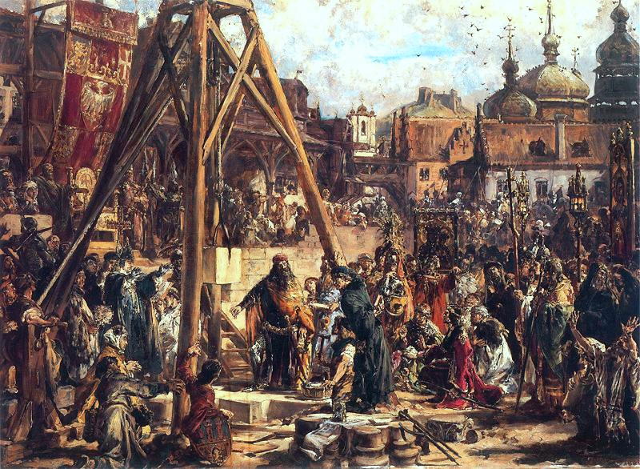
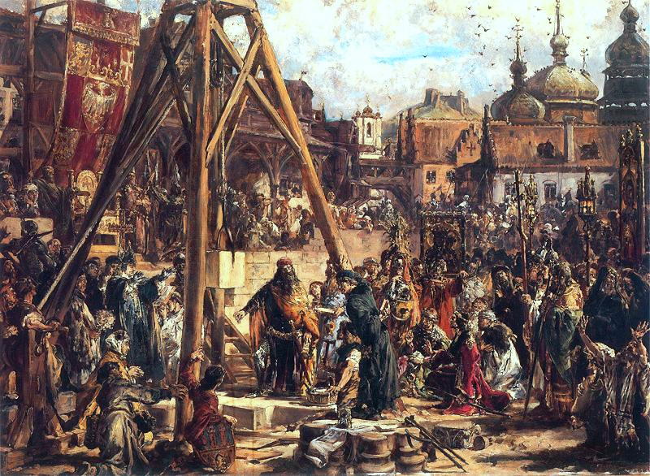

Początki dynasti - Informacje

Początki dynastii Piastów sięgają legendarnych czasów formowania się państwa polskiego. Za protoplastę rodu uznaje się Piasta Kołodzieja, prostego, lecz szlachetnego gospodarza, którego postawa miała symbolizować wartości bliskie ówczesnemu społeczeństwu. Jego syn, Siemowit, zapoczątkował ród władców, którzy stopniowo jednoczyli ziem ie zamieszkane przez plemiona słowiańskie. Historycznym twórcą państwa polskiego był Mieszko I, który w 966 roku przyjął chrzest, włączając Polskę w krąg kultury chrześcijańskiej Europy. Wydarzenie to miało ogromne znaczenie polityczne i kulturowe, a dynastia Piastów przez kolejne stulecia kształtowała losy młodego państwa.

Władcy dynastii Piastów
Mieszko I
Bolesław Chrobry

Kaźimierz Wielki

Władysław Łokietka
 

Najważniejsze wydarzenia dynastii Piastów
966 r.
Chrzest Polski
Mieszko I przyjął chrzest, wprowadzając Polskę do kręgu kultury chrześcijańskiej Europy.
1025 r.
Koronacja Bolesława Chrobrego
Bolesław Chrobry zostaje pierwszym królem Polski. Państwo polskie zyskuje rangę królestwa i większe znaczenie w Europie.
1138 .r
Rozbicie dzielnicowe
Testament Bolesława Krzywoustego dzieli Polskę między jego synów. Państwo słabnie i traci jedność na ponad 150 lat.
1320 r.
Zjednoczenie Polski
Władysław Łokietek jednoczy ziemie polskie po okresie rozbicia dzielnicowego i zostaje koronowany na króla Polski w Krakowie.
1370 r.
Śmierć Kazimierza Wielkiego
Umiera ostatni król z dynastii Piastów. Kończy się panowanie pierwszej polskiej dynastii królewskiej.